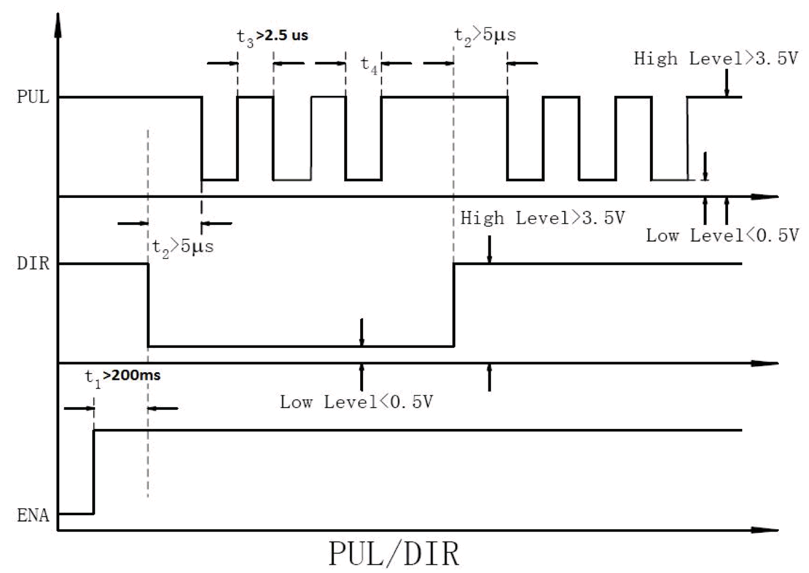

Data Needed for the HAL / INI Files

Sequence chart of control signals
Based on the chart to the right, the HAL configuration settings are:
- These are 5 μs = 5,000 ns
- DIRHOLD = 5000
- DIRSETUP = 5000
- These are 2.5 μs = 2,500 ns
- STEPLEN = 2500
- STEPSPACE = 2500
These are the values in each [JOINT_n] / [SPINDLE_n] section of Rosetta.ini (DIRHOLD, DIRSETUP, STEPLEN, STEPSPACE).
Note: Rosetta does not use a base thread - the Mesa 7i92 generates the step pulses in hardware, so the jitter and BASE_PERIOD calculation below is kept for reference only. Rosetta.ini has no BASE_PERIOD for the same reason.
Max jitter was measured on the Raspberry Pi using the command,
From that testing, the max jitter on the base thread was 16.4 μs. (See also, https://linuxcnc.org/docs/stable/html/install/latency-test.html.)
Using the data from above for the Stepper Online DM542T Drivers
- Stability before stepping = 5.0 μs
- Step length (2.5 μs x 2) = 5.0 μs
- Stability after stepping = 5.0 μs
- TOTAL = 15.0 μs
Thusly,
- Base Period = 16.4 μs + 15.0 μs = 31.4 μs = 31,400 ns
The value it would give (not used in Rosetta.ini) is:
- BASE_PERIOD = 31400
The full user manual is available.